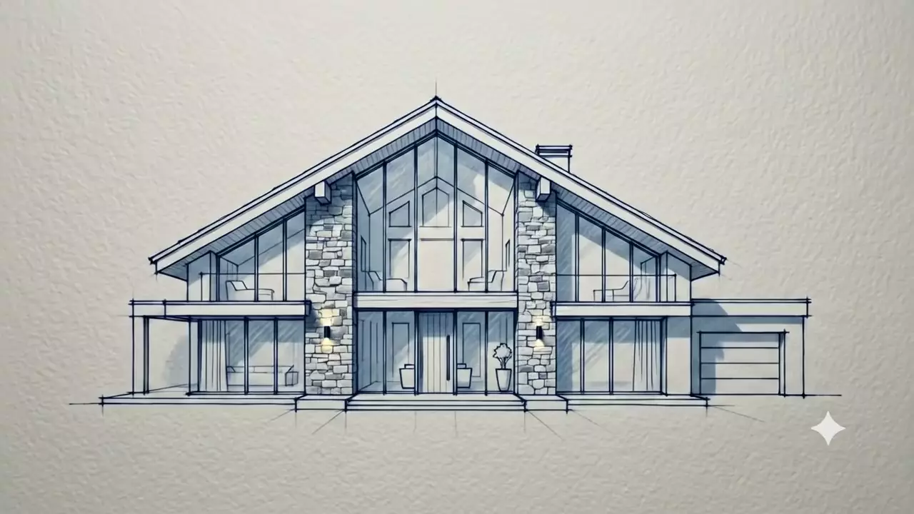
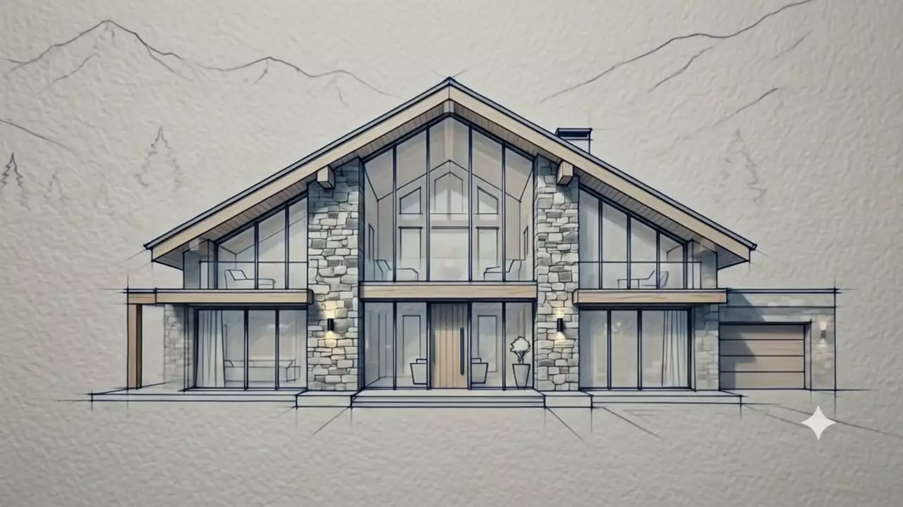
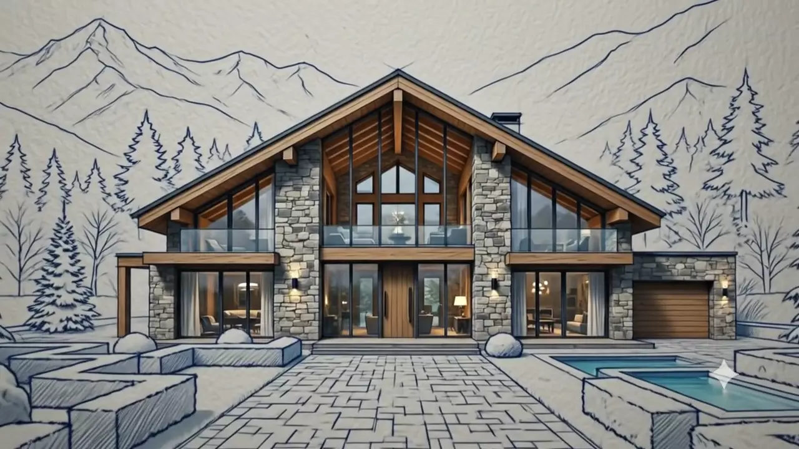
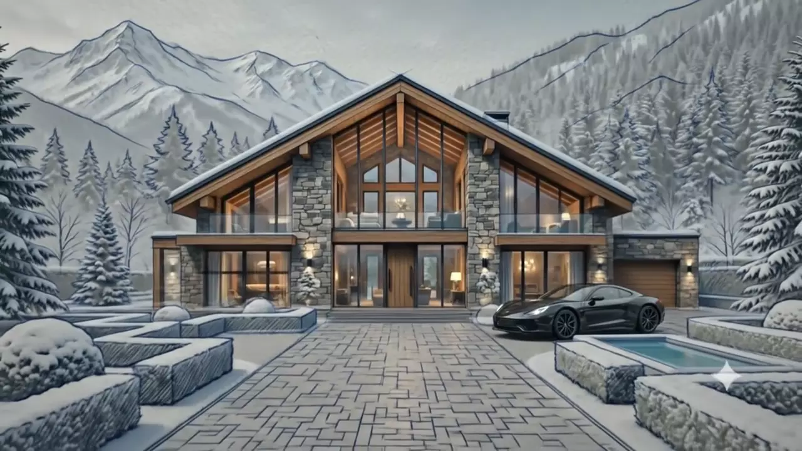
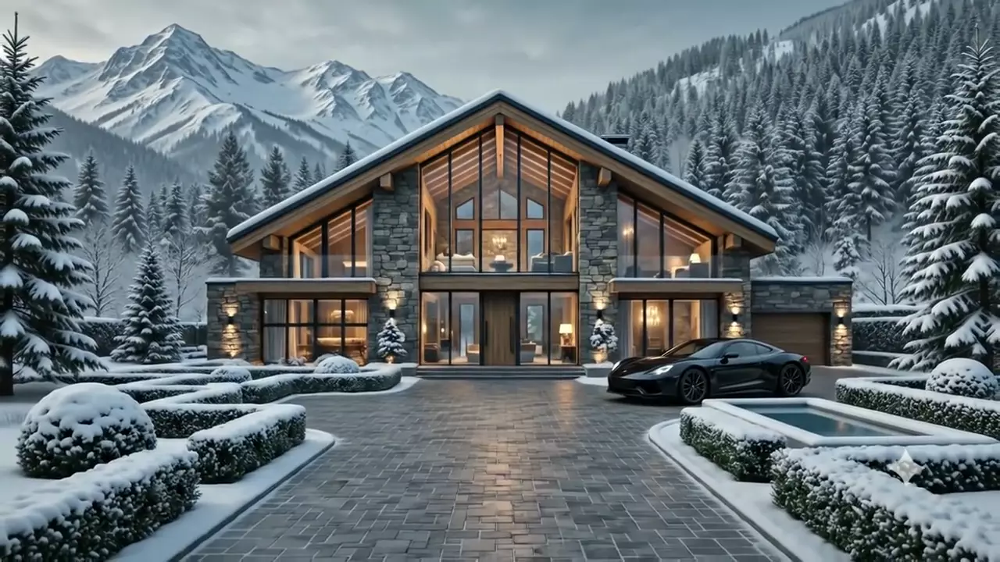

Survey & blueprint
Four seasons on the plot, a topographic scan, and an ink elevation drawn by hand before anything is digitised. We only draw what the slope allows.
- Site & snow-drift study
- Sun-path modelling
- Hand elevation + 3D massing
CHALET — ALPINE VILLA ATELIER
0%drawing the blueprint
ALPINE VILLA ATELIER — EST. 1998
DISCOVER VILLAS
Every CHALET villa begins as a single ink line on paper and ends as a warm room at 1 800 metres. Hand-cut larch, quarried stone, and glass engineered for the coldest night of the year.
KNOW MORETHE ATELIER
We build houses that hold heat, light and quiet. A CHALET villa is not a hotel suite dropped on a slope — it is a slow, warm, deliberate home, cut for its own valley, its own weather, and the family that will wake up in it.
FROM BLUEPRINT TO HOME

Four seasons on the plot, a topographic scan, and an ink elevation drawn by hand before anything is digitised. We only draw what the slope allows.

A glulam and solid-larch frame cut in our Valais workshop, numbered, trucked up the pass and raised in eleven days — often between two snowfalls.

Stone quarried within forty kilometres, laid dry by two masons. Larch cladding left raw so the façade silvers with the valley instead of against it.

Triple glazing with a warm-edge spacer, 340 mm of wood-fibre insulation and floor loops fed by ground-source heat. The house holds its temperature for days.

We hand over with the hearth lit, the beds made and the ski room stocked. Then we come back every autumn for twenty years to check the timber.
The mountain is not a backdrop; it is the first client. Before a single line is drawn we spend four seasons on the plot — tracking sun angles, snow drift, wind corridors and the exact hour the valley goes gold.
What we hand back is a villa that belongs there: low, warm, generous with glass where the view earns it, and closed where the north wind arrives.
SELECTED VILLAS
THREE MATERIALS, NOTHING ELSE

Slow-grown, untreated, mounted on an open rain-screen. It arrives honey-gold and settles into the same silver as the rock behind it.

Split, never sawn. Every column and hearth is laid dry by hand, so the wall keeps the grain and the shadow of the mountain it came from.

Triple-glazed, argon-filled, warm-edge. Big enough to hold the whole ridge line, tight enough that the room stays 21° at minus twenty.

INSIDE
Ground-source loops under 60 mm of quarry stone. The floor is the radiator, and it stays warm through the night.
A dry-laid chimney that runs the full section of the house, so the mass of the stone releases heat long after the fire is out.
A heated arrival room by the garage court — skis, boots and gloves dry by morning without ever entering the living space.
A sheltered, snow-lipped pool held at 36°, with the ridge line at eye level and nothing between you and it.
OWNERS
“They spent a year watching our plot before they drew anything. The first winter in the house, we understood exactly why.”
“Minus twenty-two outside, twenty-one inside, and the heating had been off since lunch. That is the whole pitch, really.”
“Eleven days from the first truck to a raised frame. Our neighbours are still talking about it four seasons later.”
WHERE WE BUILD
COLLECTIONS
180 – 260 m² · 12 months
from CHF 1.9M
320 – 480 m² · 16 months
from CHF 4.4M
520 m²+ · 22 months
from CHF 8.6M
QUESTIONS
Everything else, we answer on the plot — usually with boots on.
We build wherever there is real snow load and a valley worth answering to — the Alps, the Dolomites, Norway, and selected sites in the Caucasus and the Rockies. If the site needs a helicopter, we will tell you honestly what that adds.
Twelve to twenty-two months on site, plus four to seven months of design. We deliberately spend a full year of seasons on the plot first — that year is the reason the rest runs on schedule.
Yes, up to the point the frame is cut. After the workshop run begins, structural changes get expensive fast, so we freeze the shell and keep the interior open for as long as possible.
Our caretaking team. Snow clearing, heating checks, a lit fire and a stocked fridge before you land, and a full timber inspection every autumn for twenty years.
Every villa is built to passive-grade airtightness with 340 mm of wood-fibre insulation and ground-source heat. Typical heating demand is under 15 kWh/m² per year — roughly a tenth of a conventional chalet of the same size.
START
Send us a plot, a postcode, or just a feeling about a place. We answer every enquiry ourselves within two working days — and if the site is wrong for a villa, we will say so first.